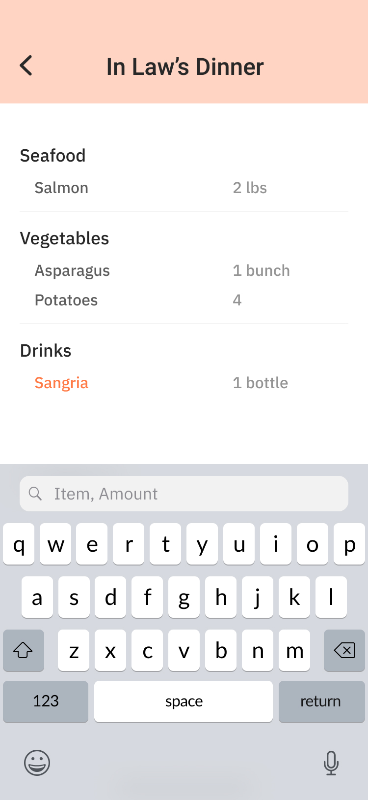
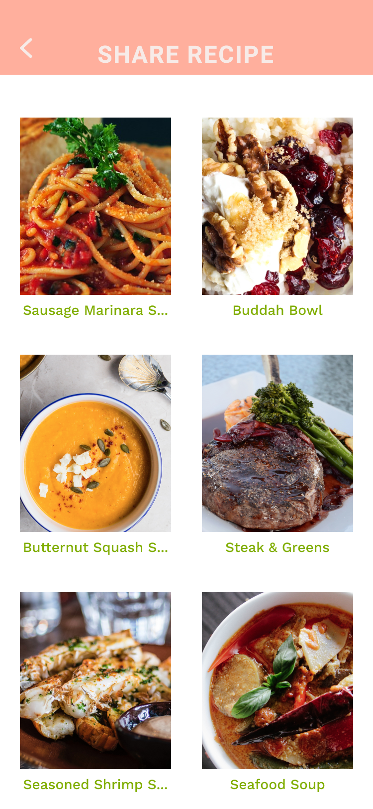
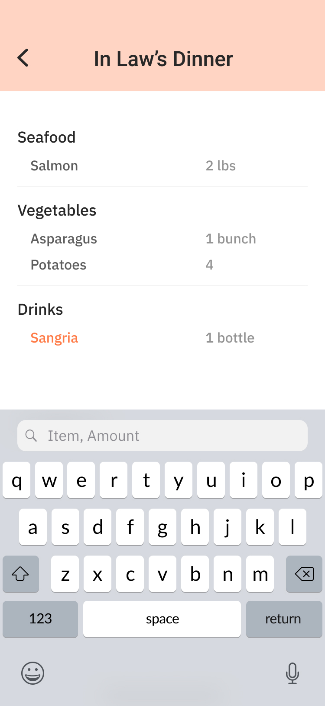
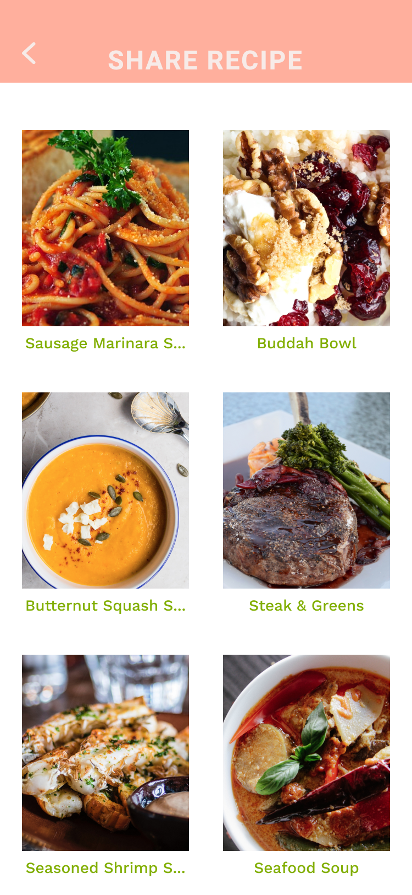
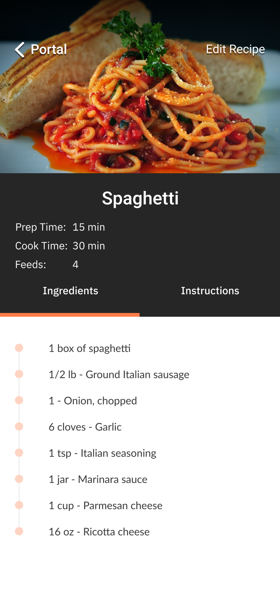
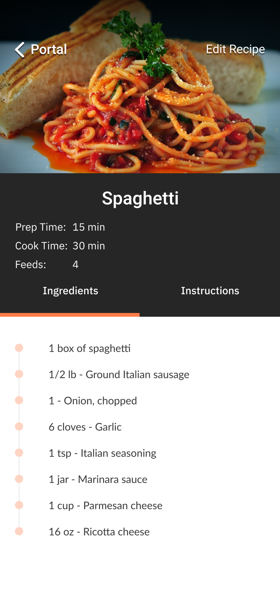

Cauldron
A grocery and recipe app aimed to help shoppers save time at the store.

About the project
The problem: Grocery shopping is a task that some might not find exciting. Many times people could spend more time in a grocery store than necessary.The goal: To create a mobile prototype that helps people shop for groceries efficiently.
Project details
Role: UX/Product DesignerTasks: UX Design: Research, sketches, wireframes, branding, mockups, prototypes, usability testing
Duration: ~ 1 month
Tools: Figma, Usability Hub, Google Suite
Deliverables: Mobile application


  
  
